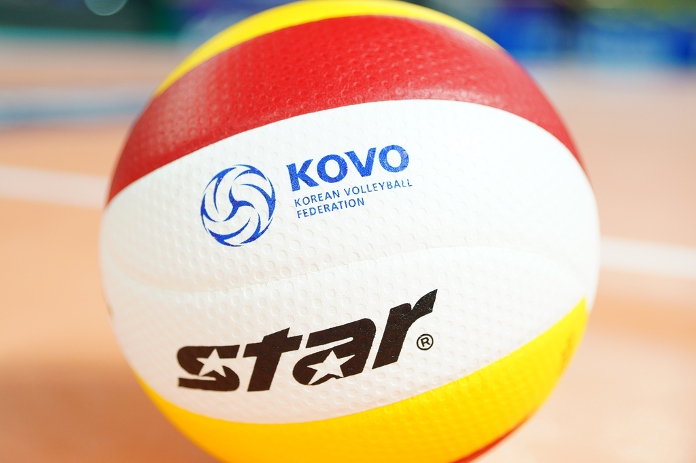

느낀점
개인별

『배구』
배구의 역사: 배구는 농구처럼 실내에서 할 수 있되 모두가 즐길 수 있는 스포츠를 목표로 만들어졌다. 1916년 처음 만들어졌다. 배구의 동작 : 동작은 여러가지가 있는데 공격 수비와 서브로 나뉜다. 공격에는 페인트, 시간차 등이 있고 수비에는 블로킹 디그 등이 있다. 배구의 룰 : 간소화하면 3번 안에 공을 쳐서 넘기는 것이다. 선수는 네트에 닿으면 안되고 후위는 어택라인을 넘을 수 없다. 배구 경기장 : 배구 경기장은 전위 후위 서비스로 나뉜다. 네트에서 가장 가까운 쪽은 전위 사각형이 후위 그리고 네트 바깥이 서비스 이다.배구를 하면서 느낀점
(안성현) : 나는 배구가 다른 스포츠보다 편하고 좋다. 넘기면 되는 단순한 경기룰도 마음에 든다.
무엇보다 팀원과의 협력으로 득점을 했을 때의 기쁨은 상상이상이다. 주로 학생반이 끝나고 배구를 하는데
잘 못해도 서로 이해해주고 때론 장난스레 놀리는 분위기가 내가 배구를 더욱 좋아하게 된 계기 인 것 같다.
조사를 통해서 내가 잘 몰랐던 역사나 룰에 대해 알게 되어서 좋고 무엇보다 배구의 여러 기술을 배워서 경기 할 때
창의적으로 적용할 수 있을 것 같다. 앞으로도 잘 배워서 좋은 경기 하고 싶다.
.